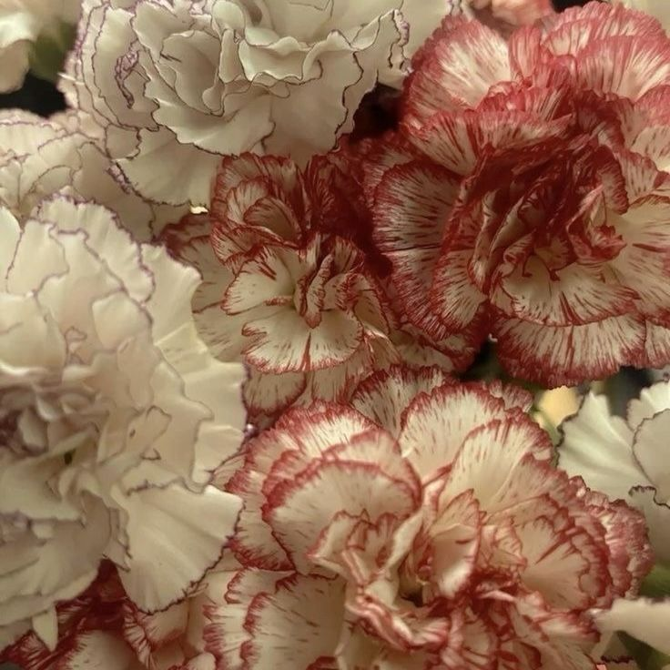

El signicficado de los claveles
Los claveles son una de las flores cultivadas más antiguas del mundo. Fueron descubiertos en la antigua Grecia y Roma por Teofrasto, uno de los primeros botánicos conocidos. Cultivados principalmente en Europa y Asia, los claveles eran muy apreciados y se utilizaban en arte, decoración, coronas y perfumes. Además, tenían importantes beneficios para la salud, Para quienes se sentían estresados, preparar una deliciosa infusión de claveles ayudaba a mejorar el ánimo y a revitalizarse. También se usaban para tratar dolores de estómago, fiebres, arrugas y otras afecciones de la piel. Por eso se le conocía como la "flor de los dioses". Existen muchas teorías y leyendas alrededor del nombre del Clavel. Algunos dicen que deriva de la palabra "coronación", ya que la flor se utilizaba en las coronas ceremoniales griegas. Otros, en cambio, creen que proviene del latín "carnis", que significa carne, dado que los primeros claveles eran prácticamente solo de color rosa.
Dado que los claveles existen desde hace bastante tiempo, se les han asociado con muchos significados simbólicos diferentes en distintas culturas. En general, los claveles simbolizan: Devoción: Muchos pintores famosos del Renacimiento utilizaron esta flor en sus escenas de compromiso durante los siglos XV y XVI. Amar: Además de simbolizar la devoción, los claveles también representan el amor. Ya sea amor familiar, amor romántico o el amor de un amigo, los claveles son un regalo encantador para muchas ocasiones, como el Día de la Madre, cumpleaños o aniversarios. Distinción: Por su forma única y encantadora, los claveles simbolizan la distinción. Fascinación: Muchas personas asocian los claveles con la fascinación, ya que son fascinantes y cautivadores a la vista. Además, han aparecido en poemas, pinturas y canciones durante siglos. Si te han regalado un ramo de hermosos claveles, apostamos a que esa persona te considera una persona realmente fascinante.